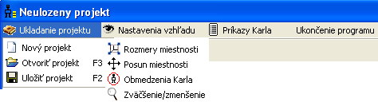

Menu a pás tlaèidiel

Menu sa skladá zo štyroch èastí.
Ukladanie projektu - slú�i na vytvorenie nového projektu, otvorenie existujúceho projektu a ulo�enie projektu .
Nastavenie vh¾adu - slú�i na zadanie ve¾kosti miestnosti, posun miestnosti, obmedzenie Karla (jeho rıchlosti, pohybu), zväèšenie a zmenšenie miestnosti (aby bola lepšie vidite¾ná).
Príkazy Karla - zoznam príkazov, ktoré si Karla nauèil.
Ukonèenie programu - zavrie okno, v prípade, �e si si neulo�il svoju prácu, tak �a Karel na to upozorní.